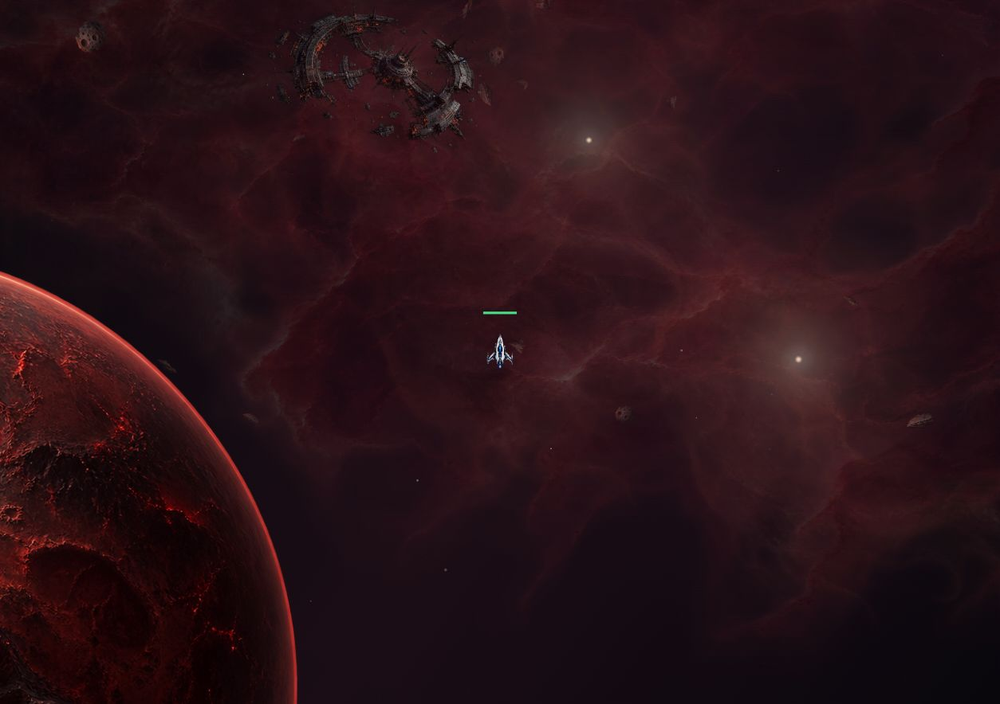
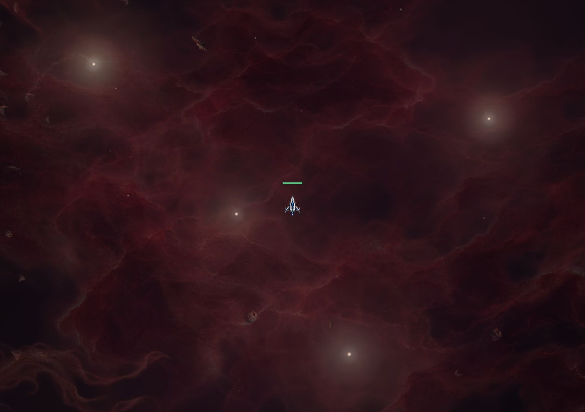
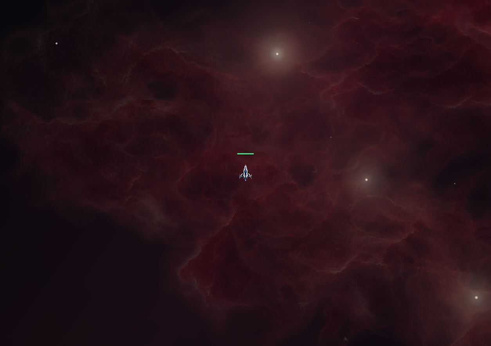
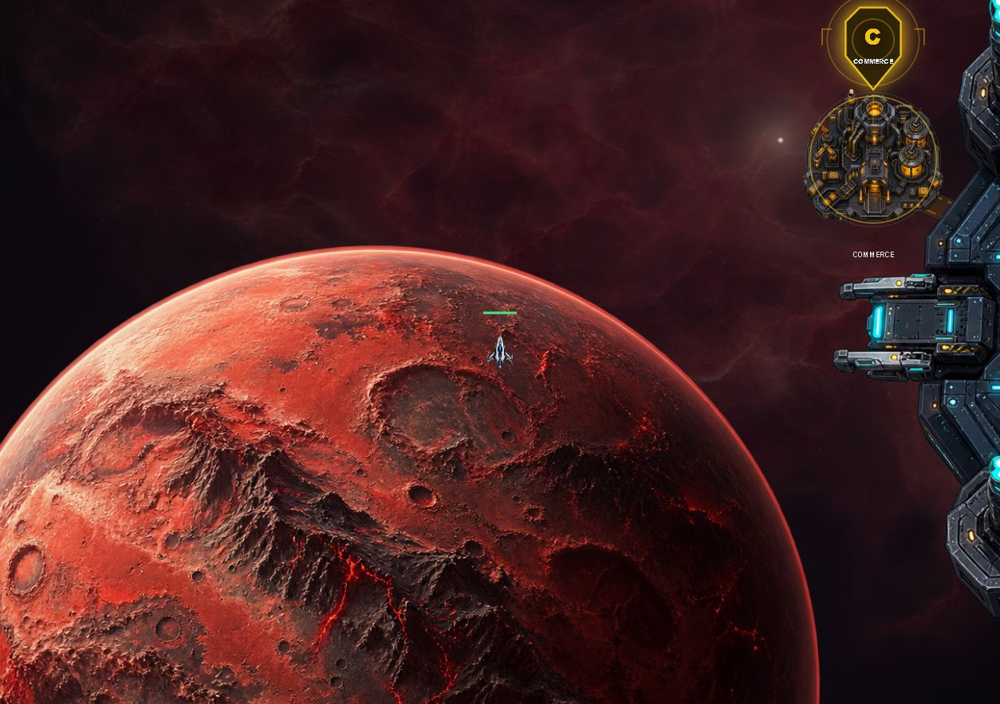

Hélion 1 — ambiance et bords
Un fond rouge un peu plus lumineux, des nuages lointains très lents et quelques voiles proches espacés. Aux limites, les rochers et les éléments proches s'effacent progressivement ; le fond et la planète continuent naturellement.
Voir le déplacement
La vidéo montre d'abord la profondeur près de la planète, puis le passage du bord gauche à partir de 12 secondes.
Ouvrir la vidéo directement
Captures

Près de la planète : luminosité relevée et moins de voiles proches.

Centre du secteur : un fond lointain continu, quelques repères lumineux et des zones de passage.

Bord gauche : les éléments proches laissent place au fond lointain.

Au-delà du bord : le disque de la planète reste continu.
Aperçu isolé du moteur de décor avec un vaisseau représentatif. Ce film n'est pas une partie multijoueur enregistrée.